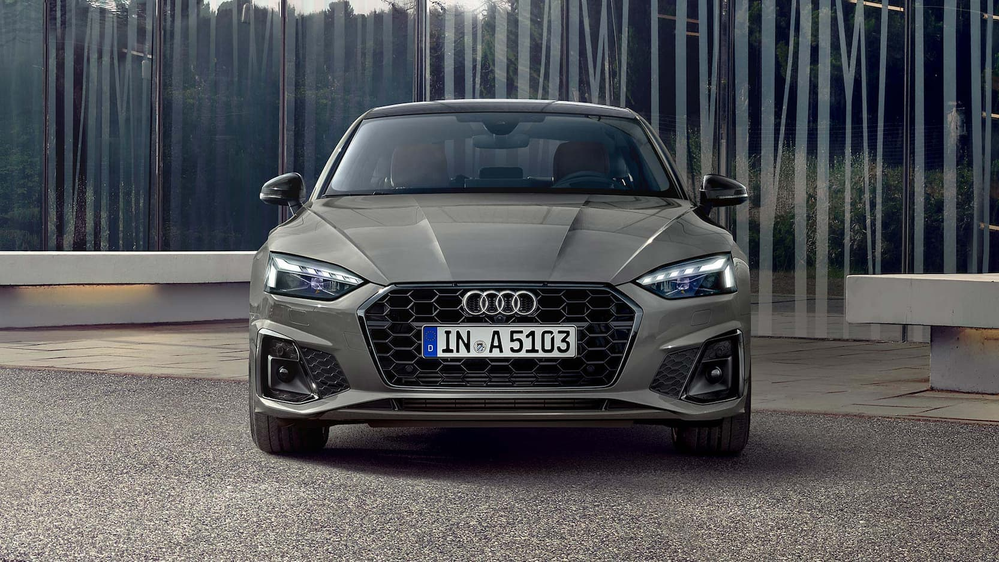
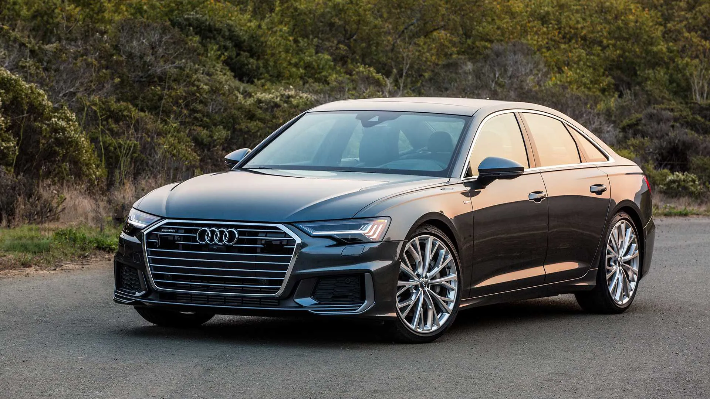
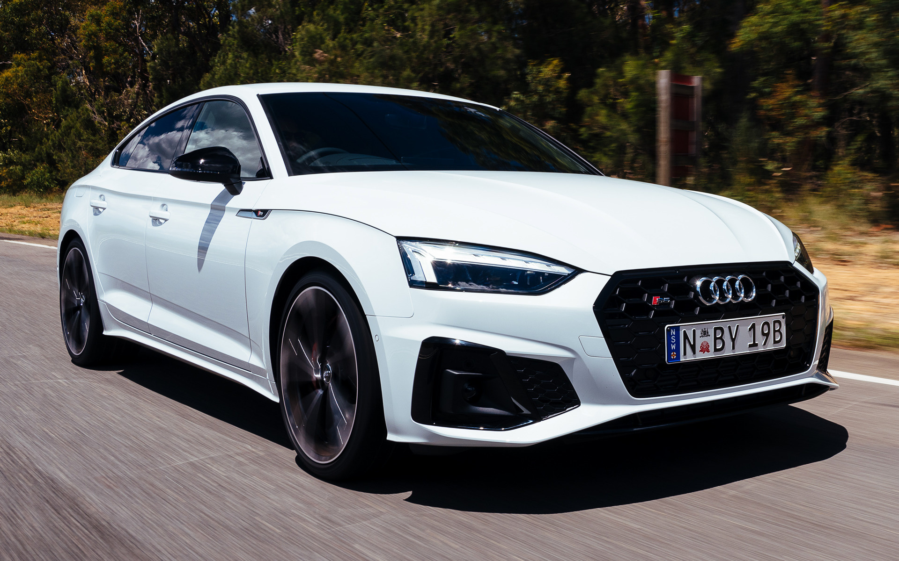
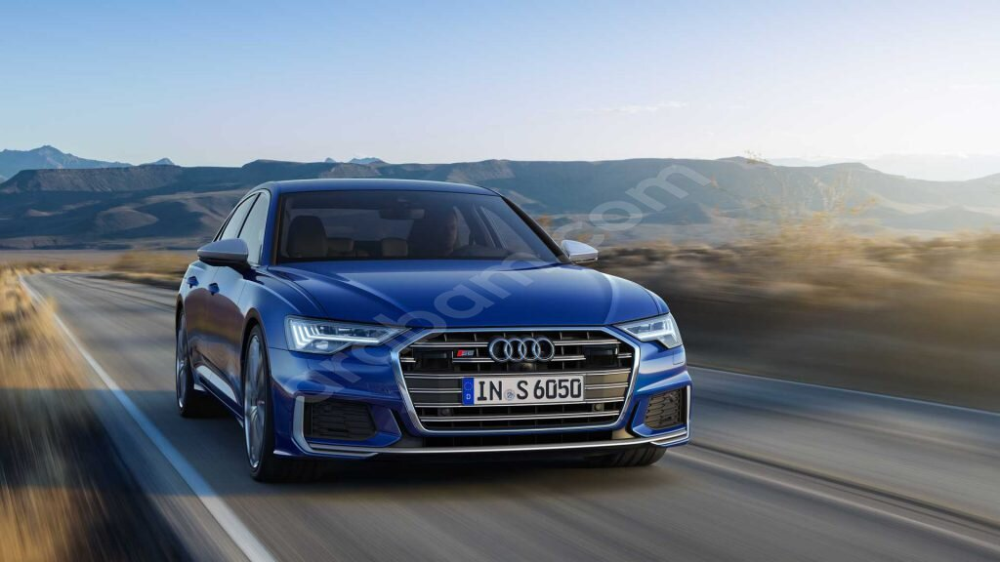
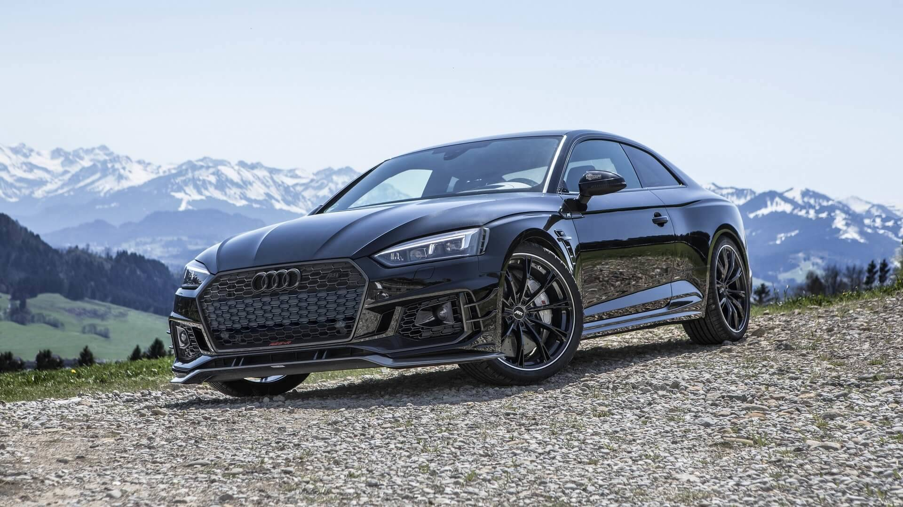

Sayfanın Altına Git

Audi A5
Araç Hakkındaki Bilgiler
- Model: 45 TFSI quattro
- Motor Hacmi: 1984 cc3
- Maksimum Güç: 265 hp
- Maksimum Tork: 370 Nm
- Ağırlık: 1830 kg
- Maksimum Hız: 250 km/s
- 0-100 km/s Hızlanma Süresi: 6 sn
- Yakıt Tipi: Benzin
- Ortalama Yakıt Tüketimi: 7,3 l/100 km

Audi A6
Araç Hakkındaki Bilgiler
- Model: 55 TFSI quattro
- Motor Hacmi: 2995 cc3
- Maksimum Güç: 340 hp
- Maksimum Tork: 500 Nm
- Ağırlık: 1945 kg
- Maksimum Hız: 250 km/s
- 0-100 km/s Hızlanma Süresi: 5,5 sn
- Yakıt Tipi: Benzin
- Ortalama Yakıt Tüketimi: 7,8 l/100 km

Audi S5
Araç Hakkındaki Bilgiler
- Model: 4.2 FSI Quattro
- Motor Hacmi: 4163 cc3
- Maksimum Güç: 354 hp
- Maksimum Tork: 370 Nm
- Ağırlık: 1830 kg
- Maksimum Hız: 250 km/s
- 0-100 km/s Hızlanma Süresi: 5,1 sn
- Yakıt Tipi: Benzin
- Ortalama Yakıt Tüketimi: 7.9 l/100 km

Audi S6
Araç Hakkındaki Bilgiler
- Model: S6 3.0 TDI Quattro
- Motor Hacmi: 3993 cc3
- Maksimum Güç: 450 hp
- Maksimum Tork: 550 Nm
- Ağırlık: 2290 kg
- Maksimum Hız: 250 km/s
- 0-100 km/s Hızlanma Süresi: 4,4 sn
- Yakıt Tipi: Benzin
- Ortalama Yakıt Tüketimi: 7,3 l/100 km

Audi RS5-R
Araç Hakkındaki Bilgiler
- Model: RS5-R-ABT
- Motor Hacmi: 4163 cc3
- Maksimum Güç: 530 bg
- Maksimum Tork: 690 Nm
- Ağırlık: 1830 kg
- Maksimum Hız: 250 km/s
- 0-100 km/s Hızlanma Süresi: 3.2 sn
- Yakıt Tipi: Benzin
- Ortalama Yakıt Tüketimi: 8.8 l/100 km

Audi RS7
Araç Hakkındaki Bilgiler
- Model: 45 TFSI quattro
- Motor Hacmi: 3996 cc3
- Maksimum Güç: 600 bg
- Maksimum Tork: 800 Nm
- Ağırlık: 2140 kg
- Maksimum Hız: 250 km/s
- 0-100 km/s Hızlanma Süresi: 3.6 sn
- Yakıt Tipi: Benzin
- Ortalama Yakıt Tüketimi: 11,6 l/100 km
Sayfanın Üstüne Git